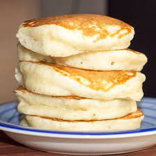

Fluffy Pancakes

Description
This super yummy and easy to make recipe will quelch your pancake craving!
and what's best? It's vegan! The ingredients in the recipe are pretty easy to find,
some are probably in your pantry already and you can also add spices or any extra
ingredients you like such as vegan chocolate chips or walnuts.
Ingredients
- 1 cup flour
- 2 tablespoons organic sugar
- 1 tablespoon baking powder
- 1/2 teaspoon salt
- 1 cup non-dairy milk (I like to use almond milk)
- 1 tablespoon apple cider vinegar (optional)
- 1 teaspoon vanilla
- maple syrup to serve
Steps
- In a medium bowl, add the flour, sugar, baking powder, and salt, and stir to combine.
- In a medium bowl or liquid measuring cup, add almond milk, apple cider vinegar, and vanilla, and stir to combine.
- Pour the liquid mixture into the dry mixture and whisk until smooth.
- Let batter rest for 5 minutes.
- Pour about 1/2 cup (65 grams) of batter onto a nonstick pan or griddle over medium heat.
- When the top begins to bubble, flip the pancake and cook until golden.
- Serve warm with maple syrup.
Home